Perona-Malik diffusion
Utilizzo del modello non lineare di diffusione di Perona-Malik, sia con lo schema esplicito, che con lo schema AOS (Additive Operator Splitting) per ridurre il rumore presente in una data immagine, valutandone la qualità e l'efficienza.
Contents
- Scelta dell'immagine
- Inserimento di rumore gaussiano additivo
- Scelta dei parametri di qualità: SSIM e MSE
- Scelta dei parametri in ingresso all'algoritmo di diffusione di Perona-Malik
- Andamento dei parametri SSIM e MSE all'aumentare del numero di step
- Scelta del numero di step N
- Perona Malik diffusion: schema esplicito
- Confronto l'algoritmo di diffusione di Perona-Malik utilizzato in precedenza con una diffusione lineare
- Perona-Malik diffusion: schema AOS (Additive Operator Splitting)
- Applicazione della diffusione di Perona-Malik con schema AOS
- Confronto finale tra schema esplicito e AOS
Scelta dell'immagine
Scelgo un'immagine e la converto eventualmente in scala di grigi
I=imread('haifa.bmp'); if ndims(I)>2 I=rgb2gray(I); end % Stampo l'immagine originale non corrotta da rumore figure(1);imshow(I) title('original data')
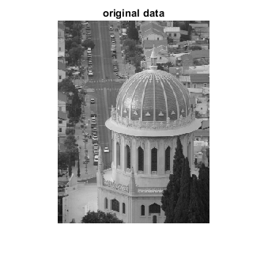
Inserimento di rumore gaussiano additivo
Aggiungo rumore gaussiano additivo all'immagine che sarà sottoposta alla diffusione:
I=double(I);
var=20;
incidenza=1;
Iag=noise(I,'ag',var, incidenza);
Scelta dei parametri di qualità: SSIM e MSE
Calcolo SSIM (Structural similarity index for measuring image quality) e MSE (mean-squared error) della mia immagine corrotta da rumore e confronterò questi parametri con quelli che otterrò dopo il denoising:
SSIMag=ssim(Iag,I); MSEag=immse(Iag,I); % Stampo l'immagine corrotta con i parametri attuali di SSIM e MSE figure(2); imshow(uint8(Iag)) title(['SSIM=',num2str(SSIMag),', MSE=',num2str(MSEag)])
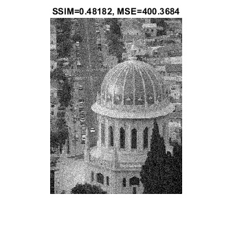
Scelta dei parametri in ingresso all'algoritmo di diffusione di Perona-Malik
Comincio a definire i vari input, tra cui il time-step dt, la deviazione standard della gaussiana che convolverà con l'immagine, mentre per il parametro K (edge threshold parameter), coefficiente che influisce sui bordi dell'immagine, in quanto posto come divisore del gradiente dell'immagine, verrà valutato per più valori:
dt=0.2; sigma=0.1; K=[2 4 6 8];
Per quanto riguarda il numero di step N, applico, per ogni K, l'algoritmo di diffusione cercando il numero di step che ottimizzi i valori di SSIM e MSE, ovvero N tale da avere il valore più alto di SSIM e più basso di MSE
for i=1:30 for j=1:4 J = pmdif( Iag, K(j), sigma, dt, i ); SSIM(i,j)=ssim(J,I); MSE(i,j)=immse(J,I); end end
Andamento dei parametri SSIM e MSE all'aumentare del numero di step
Raccolti i valori di SSIM e MSE all'aumentare del numero di step, traccio i seguenti grafici in funzione di N e per i vari valori di K:
figure(3); subplot(2,1,1) N_iter=linspace(1,30,30); plot(N_iter,SSIM(:,1),N_iter,SSIM(:,2),N_iter,SSIM(:,3),N_iter,SSIM(:,4)) legend(['K=',num2str(K(1))],['K=',num2str(K(2))],['K=',num2str(K(3))],['K=',num2str(K(4))]) xlabel('Numero di step') ylabel('SSIM') title('SSIM') subplot(2,1,2) plot(N_iter,MSE(:,1),N_iter,MSE(:,2),N_iter,MSE(:,3),N_iter,MSE(:,4)) legend(['K=',num2str(K(1))],['K=',num2str(K(2))],['K=',num2str(K(3))],['K=',num2str(K(4))]) xlabel('Numero di step') ylabel('MSE') title('MSE')
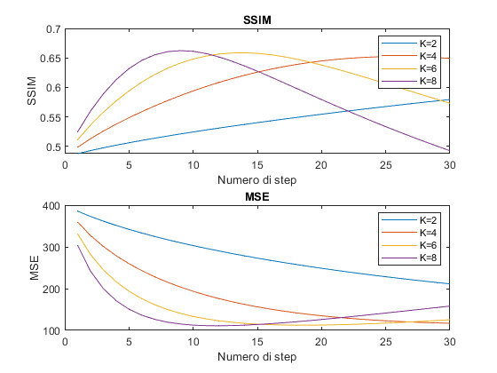
Scelta del numero di step N
Si osserva che utilizzando un K più grande permette di ottenere dei valori ottimi di MSE e SIIM con meno iterazioni. Trovo N tale da avere il massimo di SSIM e il minimo MSE coi vari K:
for i=1:4 SSIMmax=max(SSIM(:,i)); Nmax(i)=find(SSIM(:,i)==SSIMmax); MSEmin=min(MSE(:,i)); Nmin(i)=find(MSE(:,i)==MSEmin); end
Scelgo il più piccolo N trovato tra SSIM e MSE (prediligo il minor numero di step):
for i=1:4 if Nmax(i)>=Nmin(i) N(i)=Nmin(i); else N(i)=Nmax(i); end end
Perona Malik diffusion: schema esplicito
Applico l'algoritmo di diffusione di Perona-Malik con il metodo esplicito per i vari parametri K e N
figure(4); for i=1:4 J = pmdif( Iag, K(i), sigma, dt, N(i) ); SSIMj=ssim(J,I); MSEj=immse(J,I); subplot(2,2,i) imshow(uint8(J)) colormap(gray) title(['SSIM=',num2str(SSIMj),', MSE=',num2str(MSEj)]) xlabel(['K=',num2str(K(i)),', numero di step: ',num2str(N(i))]) end
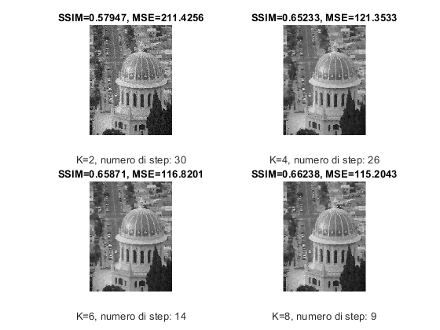
Siamo riusciti ad ottenere delle immagini più pulite, ovvero con dei parametri SSIM e MSE migliori rispetto all'immagine corrotta, ottimizzando N. Sotto viene riportata l'immagine corrotta con quella con miglior SSIM ottenuto per un miglior confronto visivo:
figure(5); subplot(1,2,1) imshow(uint8(J)) title('denoised image') xlabel(['SSIM=',num2str(SSIMj),', MSE=',num2str(MSEj)]) subplot(1,2,2) imshow(uint8(Iag)) title('corrupted image') xlabel(['SSIM=',num2str(SSIMag),', MSE=',num2str(MSEag)])
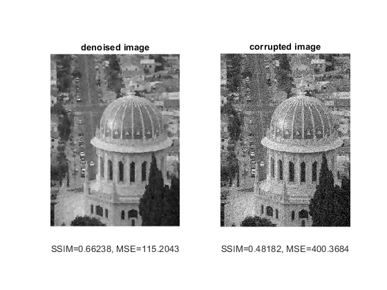
Confronto l'algoritmo di diffusione di Perona-Malik utilizzato in precedenza con una diffusione lineare
Si analizza l'evolversi degli edge di un'immagine all'aumentare di N nei due casi: Inizializzo l'immagine:
u=imread('haifa.bmp'); if ndims(u)>2 u=rgb2gray(u); end u=double(u);
Applico i due algoritmi di diffusione ed estraggo l'immagine ripulita in più istanti di tempo:
figure; sgtitle('linear diffusion') for i=1:4 j=i*2; Ulin=diffusion(u,'lin',j,K(1),dt); subplot(2,2,i) imagesc(edge(Ulin)) colormap(gray) title(['tempo:',num2str(dt*j),' s']) end figure; sgtitle('Perona-Malik diffusion') for i=1:4 j=i*2; Upm = pmdif( u, K(1), sigma, dt, j ); subplot(2,2,i) imagesc(edge(Upm)) colormap(gray) title(['tempo:',num2str(dt*j),' s']) end
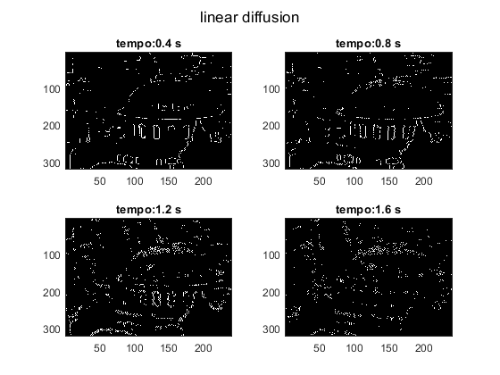
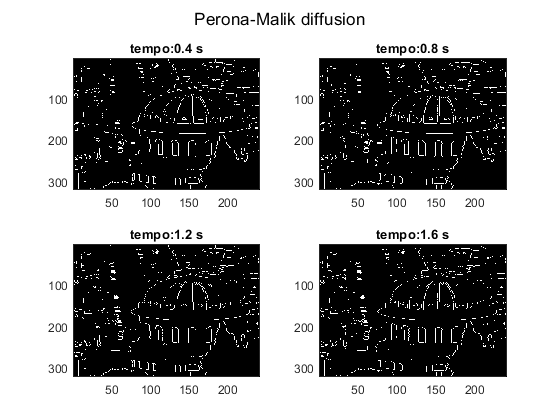
Si osserva come utilizzando una diffusione non lineare con un coefficiente g variabile in funzione del gradiente dell'immagine, i bordi vengono conservati nel tempo
Perona-Malik diffusion: schema AOS (Additive Operator Splitting)
Codici preliminari: Inizializzazione dll'immagine
I2=imread('Cameraman256.png'); if ndims(I2)>2 I2=rgb2gray(I2); end I2=double(I2); figure;imshow(uint8(I2)) title('original data')
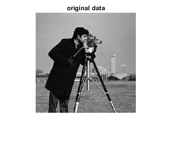
Applicazione di rumore gaussiano additivo:
var=20; incidenza=1; I2ag=noise(I2,'ag',var, incidenza); SSIM2ag=ssim(I2ag,I2); MSE2ag=immse(I2ag,I2); figure; imshow(uint8(I2ag)) title(['SSIM=',num2str(SSIM2ag),', MSE=',num2str(MSE2ag)])
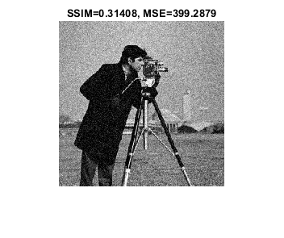
Scelta dei parametri in ingresso all'algoritmo: non avendo dei vincoli di stabilità per dt, posso scegliere dei dt più alti per raggiungere dei buoni parametri di qualità riducendo i tempi e le iterazioni
dt_aos= [2 5 10 20]; N_aos = [25 20 15 10 ]; sigma=0.2; K=0.8;
Applicazione della diffusione di Perona-Malik con schema AOS
Utilizzo diversi time-step e numero di step e analizzo le immagini
figure; for i=1:4 Iaos = pmdif( I2ag, K, sigma, dt_aos(i), N_aos(i), 'aos' ); SSIM_aos(i)=ssim(Iaos,I2); MSE_aos(i)=immse(Iaos,I2); subplot(2,2,i) imshow(uint8(Iaos)) title(['SSIM=',num2str(SSIM_aos(i)),', MSE=',num2str(MSE_aos(i))]) end
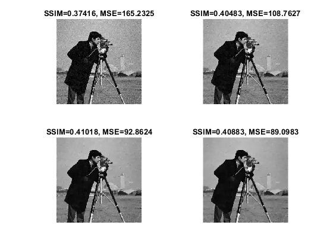
Si può notare come aumentado dt è possibile raggiungere valori simili di MSE e SSIM ottenuti con molti più step e dt più piccoli
Confronto finale tra schema esplicito e AOS
Valutiamo l'andamento dei parametri di qualità MSE e SSIM tra i due schemi all'aumentare di N:
K=0.8; sigma=0.1; dt_aos=10; dt_exp=0.25; %siamo vincolati dai vincoli di stabilità for i=1:20 Iaos = pmdif( I2ag, K, sigma, dt_aos, i, 'aos' ); Ilin = pmdif( I2ag, K, sigma, dt_exp, i ); MSEaos_final(i)=immse(Iaos,I2); SSIMaos_final(i)=ssim(Iaos,I2); MSElin_final(i)=immse(Ilin,I2); SSIMlin_final(i)=ssim(Ilin,I2); end figure; subplot(2,1,1) N_iter=linspace(1,20,20); plot(N_iter,SSIMaos_final,N_iter,SSIMlin_final) xlabel('Numero di step') legend('schema aos','schema esplicito') title('SSIM') subplot(2,1,2) plot(N_iter,MSEaos_final,N_iter,MSElin_final) xlabel('Numero di step') legend('schema aos',' schema esplicito') title('MSE')
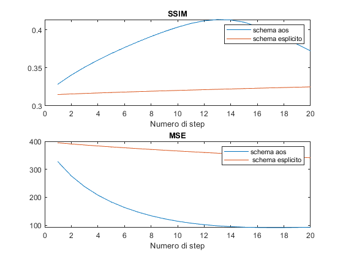
Si osserva come i valori ottimi di SSIM e MSE si raggiungono con molti meno step
Questo vuol dire che lo schema esplicito, per raggiungere dei SSIM e MSE paragonabili a quello AOS:
Naos=find(SSIMaos_final==max(SSIMaos_final)); Iaos = pmdif( I2ag, K, sigma, dt_aos, Naos, 'aos' ); Ilin = pmdif( I2ag, K, sigma, dt_exp, 400 ); figure; sgtitle('AOS vs Esplicito') subplot(1,2,1) SSIM_aos_f=ssim(Iaos,I2); MSE_aos_f=immse(Iaos,I2); imshow(uint8(Iaos)); title(['dt = ',num2str(dt_aos),', N step: ',num2str(Naos)]) xlabel(['SSIM=',num2str(SSIM_aos_f),', MSE=',num2str(MSE_aos_f)]) subplot(1,2,2) SSIM_lin_f=ssim(Ilin,I2); MSE_lin_f=immse(Ilin,I2); imshow(uint8(Ilin)); title(['dt = ',num2str(dt_exp),', N step: 400',]) xlabel(['SSIM=',num2str(SSIM_lin_f),', MSE=',num2str(MSE_lin_f)])
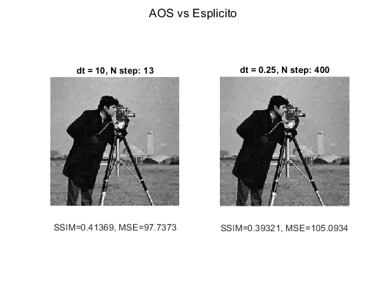
Occorrono, in questo caso, 400 step con lo schema esplicito per raggiungere valori di SSIM e MSE confrontabili con lo schema AOS